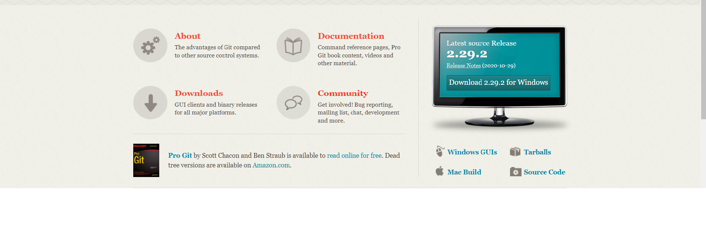

Git is designed to utilize simple to sophisticated tasks of any projects with speed but always ensure the outcome quality.
learn moreGit is designed to utilize simple to sophisticated tasks of any projects with speed but always ensure the outcome quality. To understand easily, Git is an open source dispersed version control system and is completely free for users.
Developers do not have to spend much time to master Git, in addition, its performance is productively faster in the world of open source. Features such as convenient staging areas, cheap local branching, and multiple workflows are the factor which makes Git is much more different than SCM tools.
Git allows you to access multiple local branches at the same time but each of them is independent. For instance, you can do anything such as frictionless context switching, role-based codelines, feature-based workflow, disposable experimentation with Git. Particularly, all your branches are not needed to push to the repository, you can push the one that you want to.
All operations in Git are fast because it is executed locally, however, the size of data is only about more than 20 MB.
Git also included Distributed SCM, with this feature, developers can do a “clone” of the integrated repository instead of making a “checkout” at the current tip of the source code.
Users can be assured that their data never be lost because Git always saves a new copy from the previous version with a comment so that you could know the time and what you have edited.
“Staging area” or “Index” is an exclusive aspect of Git, it allows commits to be formatted and reviewed before completing the commit.
Git is completely free you do not have to pay anything to own it.
Step 1: Open a browser
Step 2: Search Git or use this link: https://git-scm.com/
Step 3: You can see a monitor and click on the Download button on it
Step 4: After finish downloading, there will be pop – up window, click on Run, and enable it to run
Step 5: After finish setting up, you can use Git now
| Commands | Definition |
| git config | Configure the username with your commits |
| git add | Adds a file to the staging area |
| git commit -m | Records the file permanently in the history of that version |
| git commit -a | Commits any files you have added with the git add command; besides, it also commits any files you have changed before |
| git push [variable name] master | The committed changes of the master branch will be sent to your remote repository |
| git push [variable name] [branch] | The branch commits will be sent to your remote repository |
| git push [variable name] :[branch name] | Deletes a branch on the remote repository |
Conflicts are the situation when you and someone in your teampush something to the branch with a same name. As a result, an error will happen. To figure out it, there are some steps for you.
Step 1: Make sure you're in your repository directory
$ cd ~/<repo_directory>
For example, if your repository name is my-repository, the result might look something like this:
computer:$ cd ~/my-repository
computer:my-repository emmap$
Step 2: Pull the most recent version of the repository from Bitbucket
$ git pull
Step 3: Check out the source branch
$ git checkout <feature_branch>
Step 4: Pull the destination branch into the source branch.
At this point, pulling the destination will try to merge it with the
source and reveal all the conflicts
$ git pull origin <destination_branch>
For example, if your destination branch is master, the result will look
something like this:
computer:my-repository emmap$ git
pull origin master
* branch master -> FETCH_HEAD
Auto-merging team_contact_info.txt
CONFLICT (content): Merge conflict in
team_contact_info.txt
Automatic merge failed; fix conflicts
and then commit the result.
When you merge two branches with conflicts locally,
you'll get conflict markers in the file when you open your editor
Step 5: Open the file to resolve the conflict. You can do this using the command line or you can navigate to the file
Step 6: Resolve the conflict by doing the following
Remove the change designations added by Git
Correct the content
Save the file
Step 7: Add and commit the change
$ git add <filename>
$ git commit -m'commit message'
Step 8: Push the change to the remote
git push origin <feature_branch>
When you check the pull request, the pull request will still be open and you'll no longer see any merge conflicts.